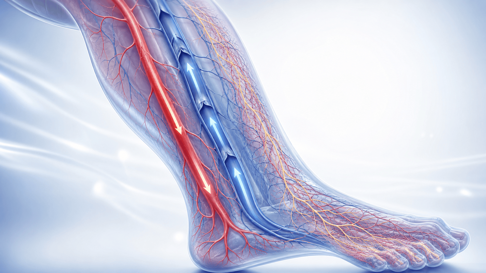
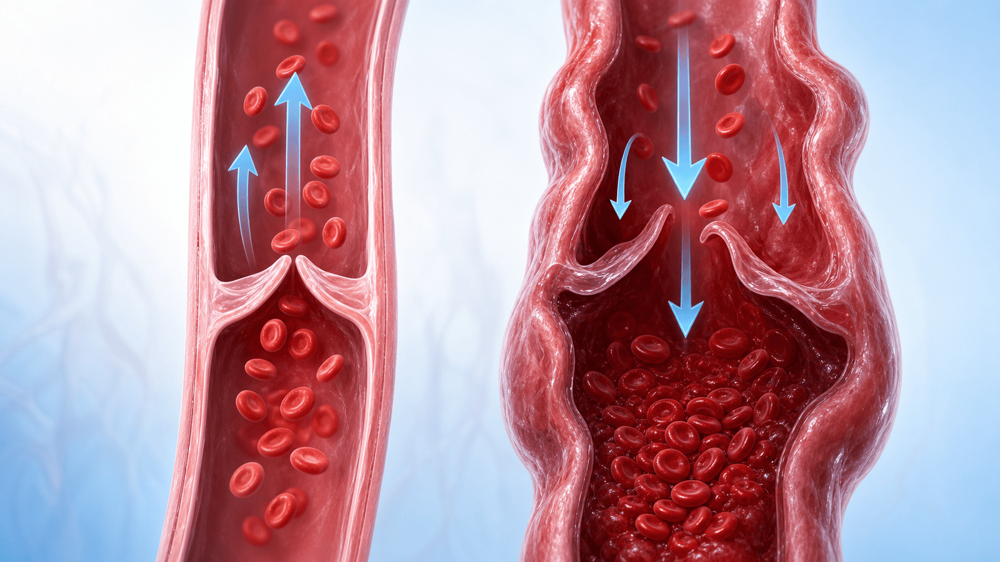
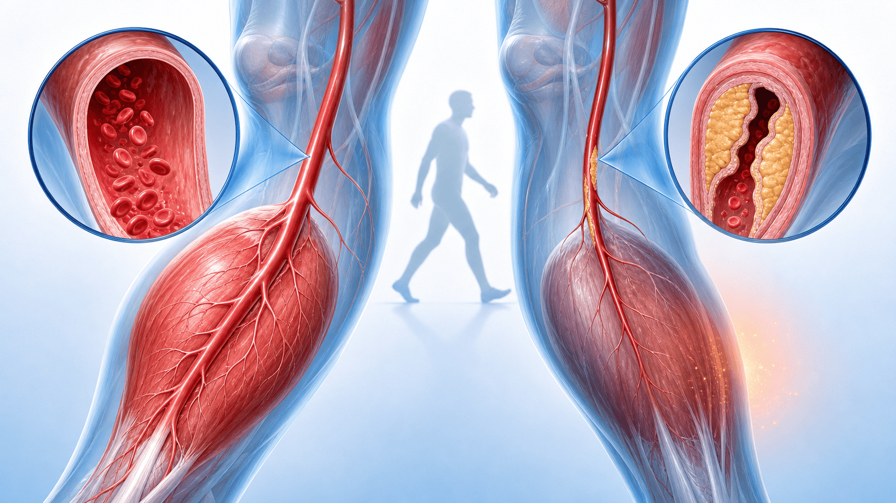

PATIENT EDUCATION · CIRCULATION
혈액순환제,
제대로 알고 드세요
“다리가 무겁다·저리다·차다, 어지럽다” — 원인에 따라 약이 다릅니다. 무엇이 정말 효과가 있고 무엇이 그렇지 않은지, 안전하게 쓰는 법까지 함께 봅니다.
CHAPTER 01 · 이해
‘혈액순환제’는 한 가지 약이 아닙니다
흔히 한데 묶지만, 작용도 적응증도 다른 네 갈래의 약입니다
4가지
은행엽 · 정맥순환제 · 말초동맥질환약 · 뇌순환개선제 — 서로 다른 약을 한 이름으로 부르고 있을 뿐입니다.
Why it matters
원인(정맥·동맥·뇌·신경)에 맞춰 약을 골라야 효과가 있습니다. 맞지 않으면 효과는 없이 출혈·부작용 위험만 남고, 보험에서도 인정받기 어렵습니다. 그래서 “순환이 안 돼서”라는 막연한 처방 대신 원인을 먼저 나눕니다.
CHAPTER 01 · 이해
같은 ‘혈액순환’이 아닙니다 — 3가지 길
동맥·정맥·미세순환은 생기는 문제도, 필요한 약도 다릅니다
ARTERY · 동맥
심장 → 발끝으로 보내는 길
산소·영양을 실어 나릅니다. 좁아지면 걸을 때 종아리 통증(파행)·발 냉증이 생깁니다.
VEIN · 정맥
발끝 → 심장으로 돌리는 길
피를 위로 올려보냅니다. 판막이 고장나면 붓고 무겁고 저녁에 심해집니다.
MICRO · 미세순환·신경
가는 혈관과 신경의 문제
저림·시림으로 나타나며, ‘혈액순환제’가 1차 치료가 아닐 때가 많습니다.

CHAPTER 01 · 이해
“무겁다·저리다·차다” — 먼저 원인을 나눕니다
같은 다리 증상도 원인에 따라 치료가 완전히 다릅니다
정맥 · VENOUS
무겁다 · 붓는다
저녁에 심해지는 둔중감·부종 → 정맥질환. 압박요법·정맥순환제.
동맥 · ARTERIAL
걸으면 아프다
걸으면 아프고 쉬면 호전 → 말초동맥질환. 발목혈압(ABI) 검사.
신경·기타 · OTHER
저리다 · 시리다
말초신경병증·디스크·갑상선·빈혈·레이노 등 비혈관 원인이 흔합니다.
전정·청력 · DIZZY
어지럽다 · 귀가 울린다
전정·청력 평가가 먼저. 은행엽을 습관처럼 쓰지 않습니다.
핵심
원인 진단이 먼저 — 막연한 ‘혈액순환’ 처방은 근거가 약합니다.
CHAPTER 02 · 정맥
정맥 판막이 고장나면 — 붓고 무거워집니다
다리 정맥의 판막이 약해져 피가 거꾸로 고이는 병입니다
정상 · NORMAL
한 방향으로만 열리는 판막
정맥 속 판막이 한 방향으로만 열려 피를 심장 쪽으로 차곡차곡 올려보냅니다.
고장 · REFLUX
판막이 새면 피가 거꾸로
판막이 약해지면 피가 다리로 역류·정체 → 압력이 올라가 붓기·무거움·거미양 정맥이 생깁니다.
핵심 · KEY
약은 증상을 줄일 뿐
정맥순환제는 부종·무거움을 덜어주지만, 늘어난 정맥·정맥류 자체를 없애지는 못합니다.

CHAPTER 02 · 정맥
정맥질환 — 압박이 1차, 약은 보조
압박스타킹·다리 올리기·체중관리가 먼저, 정맥순환제는 증상 보조
1차 · FIRST
압박요법이 가장 효과적
압박스타킹 착용, 다리 올리기, 자주 걷기, 체중관리 — 비약물 관리가 핵심입니다.
보조 · SUPPORT
정맥순환제 (디오스민·MPFF 등)
디오스민·MPFF·호스체스트넛 등이 부종·무거움을 ‘약간’ 줄여주는 대증 보조약입니다.
의뢰 · REFER
이럴 땐 혈관 진료
한쪽만 심한 부종·피부 변화·궤양·튀어나온 정맥류 → 초음파와 혈관 시술 상담이 필요합니다.
CHAPTER 03 · 동맥
걸으면 종아리가 아프다 — 동맥이 좁아진 신호
말초동맥질환(PAD) — 동맥이 좁아져 근육에 피가 부족해집니다
증상 · SYMPTOM
걷다 아프고, 쉬면 풀린다
걸으면 종아리·허벅지가 아프고 멈추면 1~2분 내 호전(간헐성 파행). 심하면 쉴 때도 아프고 발에 상처가 낫지 않습니다.
원인 · CAUSE
콜레스테롤로 좁아진 동맥
흡연·당뇨·고지혈증·고혈압이 동맥경화를 키워 혈관을 좁힙니다.
확인 · CHECK
발목혈압(ABI)으로 진단
팔과 발목의 혈압비를 재는 간단한 검사로 객관적으로 진단합니다.

CHAPTER 03 · 동맥
말초동맥질환 — 운동과 위험인자 관리가 1차
약보다 먼저 걷기 운동과 금연·스타틴이 핵심입니다
1차 · 운동요법
통증 직전까지 걷고 쉬기
걷다 아프면 쉬기를 반복하는 ‘감독 운동’이 보행거리를 가장 많이 늘립니다.
1차 · 위험인자
금연·스타틴·혈압/혈당
금연이 가장 중요. 스타틴·혈압·혈당·항혈소판제로 동맥경화 진행을 늦춥니다.
증상약 · CILOSTAZOL
실로스타졸 — 보행거리 ↑
파행 증상·보행거리를 개선하는 1차 증상약. 단, 심부전엔 금기입니다.
권장 안 함 · PENTOXIFYLLINE
펜톡시필린은 권하지 않음
간헐성 파행에는 효과 근거가 약해 권장하지 않습니다.
주의
통증 없는 단순 냉감·저림에 검사 없이 장기 처방하는 것은 권하지 않습니다.
CHAPTER 04 · 약물 바로 알기
은행잎(은행엽) — 무엇에 듣고, 무엇에 안 듣나
매우 흔히 쓰지만, 효과가 입증된 곳은 제한적입니다
+
근거가 있는 사용
- 경도~중등도 치매의 증상 보조 — 표준화 추출물에서 인지·일상생활 개선
- 일부 어지럼(중추성) 보조 — 단, 어지럼 원인 감별이 먼저
- 내약성은 대체로 좋은 편 (위장 불편 정도)
- 효과를 보려면 보통 수주~3개월 써 보고 재평가
- 표준화 추출물(EGb 761)에서 근거가 쌓임 — 함량·제형이 중요
−
근거가 약하거나 없는 사용
- 치매 ‘예방’ — 대규모 연구에서 효과 입증 실패
- 이명(귀울림) — 표준치료로 권장하지 않음
- 간헐성 파행 — 임상적 이득 없음
- 막연한 ‘혈액순환’ 목적의 장기 복용
- 건강기능식품 은행잎 ≠ 의약품 (함량·효과 자료 다름)
CHAPTER 04 · 약물 바로 알기
한눈에 보는 근거 — 어디에 무엇이 강한가
적응증이 분명할 때, 가장 근거가 강한 선택을 고릅니다
동맥 · 간헐성 파행
실로스타졸 ★★★★★
보행거리를 가장 많이 늘림. 운동요법과 함께 1차 (심부전엔 금기).
정맥 · 만성정맥질환
디오스민·MPFF ★★★★★
증상·부종 개선 근거가 가장 두터움. 압박요법과 함께 사용.
정맥 · 부종
호스체스트넛 ★★★★
단기 부종·증상 개선에 근거 있음(대증 보조).
동맥 · 파행
펜톡시필린 ★☆☆☆☆
간헐성 파행에는 효과 근거가 약해 권장하지 않음.
인지 · 예방
은행엽 치매 예방 ✕
대규모 연구에서 예방 효과 입증 실패.
이명
은행엽 이명 ✕
근거 약하고 일관되지 않아 표준치료 아님.
CHAPTER 05 · 안전하게
출혈 · 휴약 · 금기 — 안전하게 드세요
시술 전 중단, 약물 병용, 금기를 꼭 확인합니다
출혈 · BLEEDING
함께 먹으면 출혈 위험 ↑
은행엽·실로스타졸·항혈소판제를 아스피린·항응고제와 함께 쓰면 출혈 위험이 커집니다 — 병용 전 꼭 상의하세요.
시술 전 · HOLD
내시경·수술 전엔 중단
내시경·용종절제·발치·수술 전에는 중단이 필요한 경우가 많습니다. 복용 사실을 미리 알리세요.
금기 · CONTRA
심부전·임신은 특히 주의
실로스타졸은 심부전 환자에게 금기입니다. 은행엽 등 임신 중 피해야 하는 약도 많습니다.
CHAPTER 05 · 안전하게
집에서 기억할 7가지
원인에 맞는 약을, 안전하게 — 핵심만 모았습니다
01
다리가 무겁고 부으면 — 압박스타킹·다리 올리기·자주 걷기 먼저
02
걸으면 종아리가 아프면 — 참지 말고 진료, 금연이 가장 중요
03
저림·시림은 — ‘혈액순환’으로 단정 말고 원인 검사부터
04
은행잎은 — 치매 예방·이명 목적의 장기 복용은 효과 근거 없음
05
아스피린·항응고제 복용 중이면 — 병용 전 꼭 상의
06
내시경·수술·발치 전 — 복용 중인 약을 미리 알리기
07
실로스타졸은 — 심부전이 있으면 복용 금지
→
증상의 원인에 맞는 약을, 안전하게 — 함께 정합니다
END OF DECK · THANK YOU
막연한 순환제 대신,
원인에 맞는 한 가지
무엇이 효과 있는지 정확히 알고 쓰면, 더 안전하고 효과적입니다
Phone
031-893-4560
Address
경기 용인 수지구
광교중앙로 298, 4층
광교중앙로 298, 4층
Hours
평일 08:30–18:30
토 08:30–13:30
토 08:30–13:30
SCAN TO REVISIT
집에서 다시 보기
QR을 스캔하면 핸드폰에서
같은 자료를 다시 볼 수 있어요
같은 자료를 다시 볼 수 있어요